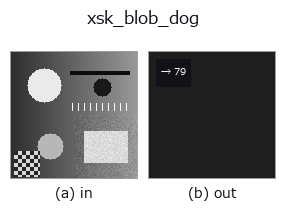

features op• Data kinds: image → feature
• Call: fullseye.apply(img, "xsk_blob_dog", a=0.5, b=0.5) (the 2-D model is one image plus two scalar knobs a,b∈[0,1])

*The figure is the actual output on a synthetic 128×128 input. Left: input, right: output. Point clouds are drawn as a top-down scatter (brightness = z), 1-D series as a line plot, volumes as the maximum-intensity projection along z, videos as the middle frame, complex images as magnitude; return values that are not pictures are shown as the values themselves.*
Sweeping knob a (0.1 / 0.5 / 0.9, the other knob at its default):
▸ xsk_blob_dog: knob a sweep (docs site)
Sweeping knob b (0.1 / 0.5 / 0.9, the other knob at its default):
▸ xsk_blob_dog: knob b sweep (docs site)
Number of detected blobs (speckle-like structures) (detected using one of LoG/DoG/DoH).
Detects blobs using one of skimage.feature's Laplacian of Gaussian (LoG) / Difference of Gaussian (DoG) / Determinant of Hessian (DoH) (this code implements the 3 kinds in common, and which one is used is decided by the op name under which the caller registered it — xsk_blob_log / xsk_blob_dog / xsk_blob_doh —) and returns their count as is (feature output).
a sweeps the maximum scale searched, max_sigma, over the range 5-25 (the larger, the larger the blobs picked up). b sweeps the detection threshold threshold over 0.02-0.17 (the smaller, the weaker the blobs picked up, and the more the count tends to rise). The 3 methods differ in speed and accuracy (LoG is the most accurate but slow; DoH is strong at edges but weak on small blobs; etc.).
• gallery2d_features family guide
• Sample-data catalog (download URLs / licences) — 2-D uses skimage.data (BSD/public domain) plus synthetic images; 3-D lists download URLs for real data sources (Stanford, PDS, …).
• Operator provenance and references — the sources of the research/methods this op family came from.
• The canonical algorithm (author, year) and its uses are named in the family usage guide above.
The program below has been verified to run (same input as the figure). In Studio's help this block becomes buttons that load and run it on the spot.
xsk_blob_dog 0.50 0.50
▸ Load this pipeline · Load & run
• gallery2d_features — py -3.11 examples/gallery2d_features.py
feature as input)features)effective_bit_depth · blob_count · area_frac · count_contours · total_length · vol_count · sk_euler · sk_entropy_feat
*Provenance: ops.py — 2D operator registry. This per-op note is generated by tools/opdocs.py md (do not hand-edit).*
© 2026 Kazufumi Furuse — Fullseye operator documentation. Licensed under Apache-2.0.